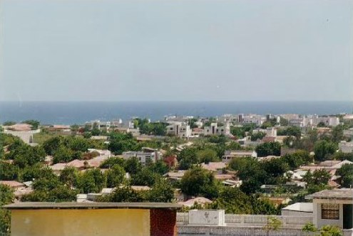

Badda Kismaayo
Hirarka xeebta koonfureed.

Jubbada Hoose
Kismaayo waxay ku taal koonfurta xeebta. Dekeddeeda waxaa ka soo degga kalluun iyo alaab, magaaladuna waxay u dhow dahay webiga Jubba.
Xiga: XiriirHirarka xeebta koonfureed.
Guryaha iyo badda ka dambeysa.

Xeebta Badweynta Hindiya.